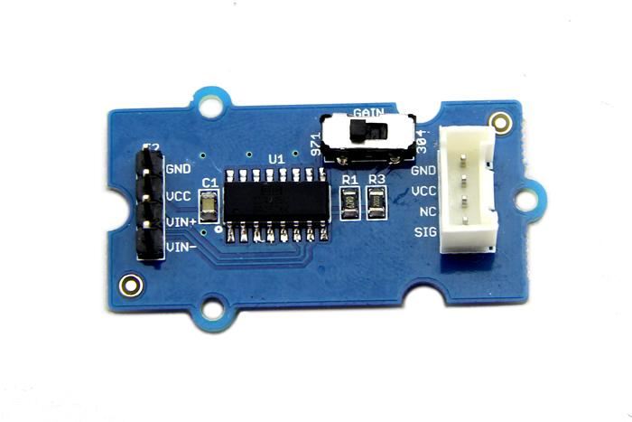
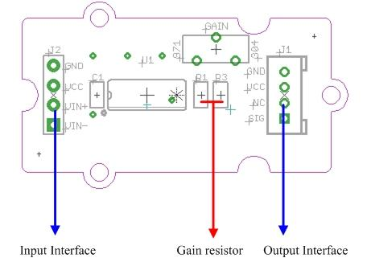
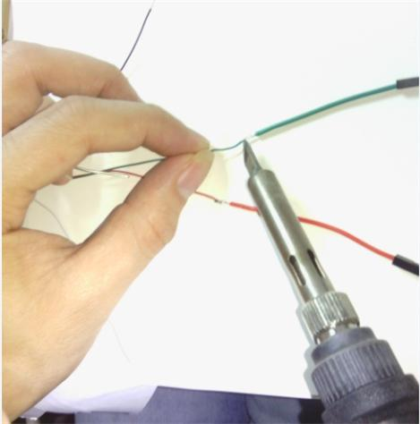
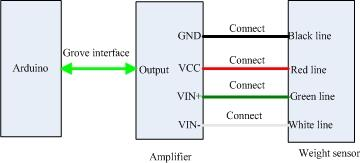
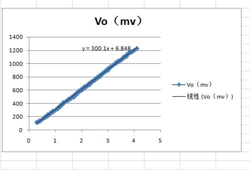
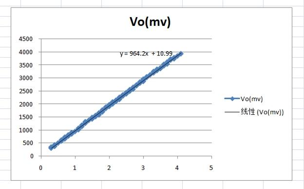

Have you found that setting up an amplifier IC on the breadboard is a troublesome and totally no-need-to-repeat job? This Grove module can save you clutter to settle up such an IC by integrating the whole operating circuit. It's designed for precise differential-input amplification. Input the differential signals of your sensor to this module through the male pins, then your Arduino will get a precisely amplified output from the Grove interface. The gain scale factor is selectable. You can get a 304 times or 971 times amplification via a switch on the board.

| Item | Min | Typical | Max | Unit | ||
|---|---|---|---|---|---|---|
| Operating Voltage | 2.7 | 5.0 | 36 | VDC | ||
| Input Voltage |
0.1 | \ | (Vcc-0.8)/Gain | mV | ||
| Output Voltage | 0 | \ | Vcc-0.80 | mV | ||
| Gain | Select 304 | 297.92 | 304 | 310.08 | / | |
| Select 971 | 951.58 | 971 | 990.42 | |||

J2：Signal Source Interface
J1：Output Interface, Standard Grove Interface
R1：62Ω gain resistor
R3: 200Ω gain resistor
U1: INA125 IC, Instrumentation amplifier
1. Sensor Choosing
The amplifier can turn signals in mA scale up to A scale. Before using it, make sure the output range of your sensor is in mA scale. For example, Weight Sensor is one of them.
2. Connector Reforming
To pair the weight sensor up with the male pins on the amplifier, female connectors need to be soldered on its wires.

3. Hardware Hookup
Connect the weight sensor to the amplifier as the picture depicts below.

4. Measurement
Copy and paste the demo code below to Arduino IDE and upload it.
void setup()
{
Serial.begin(9600);
Serial.println("start");
}
void loop()
{
int i;
int value;
float V,Vo;
float Sum=0;
for(i=0;i<10;i++)
{
value=analogRead(4);
V=value*5.00/1023;
Sum+=V;
delay(10);
}
Vo=Sum/10;
Serial.print("Output score:");
Serial.println(Vo);
delay(1000);
}
You can view the amplified signals via serial monitor. For the value of the input signal, you need to use the multimeter to measure the voltage difference between VIN+ and VIN-.
Next is a test to find out the precision of amplifier. We collected 100 groups of input signals and output signals of amplifier, under either 304 or 971 scale factor condition, and plotted following two graphs.
We gradually added the load of weight sensor by adding water drop by drop into a bottle tied to it.

The horizontal axis represents the input voltage and the vertical axis represents the output voltage. With the weight increase of the bottle, the input signal turns up linearly. The actual gain of the first graph is 300.1 which has 1.3% deviation from theoretical gain, 304. And the actual gain of the second graph is 971. The deviation is 0.8% compared to 964.2.
The measurement range is determined by power supply voltage VCC , the maximum output voltage is between (VCC-1.2) and (VCC-0.8).
Amplifier 1.0 Eagle File
Amplifier1.0 Schematic
INA125 Datasheet